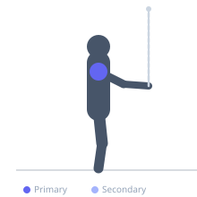
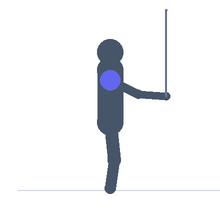

Exercise guide / Cable External Rotation
Cable External Rotation
The cable external rotation targets the external rotators of the shoulder — primarily the infraspinatus and teres minor — using a cable machine at elbow height. The cable maintains continuous tension through the full arc of motion unlike rubber bands or manual resistance, providing a consistent training stimulus to the rotator cuff throughout the range. It is a cornerstone exercise for rotator cuff health, shoulder injury prevention, and rehabilitation.
Primary muscles
infraspinatus
teres minor
Secondary muscles
deltoid posterior
Equipment
Cable Machine (Dual Pulley / Functional Trainer)


Starting position
- Stand beside a cable machine with the pulley set at elbow height. Grip the handle with the inside hand. The upper arm is at the side, elbow bent to 90 degrees, forearm pointing toward the cable machine.
Setup
- Keep a small towel or folded pad tucked between the elbow and the torso to maintain the upper arm position throughout the movement.
Steps
- Step 1: Stand with the cable at elbow height, grip the handle with the inside hand.
- Step 2: Bend the elbow to 90 degrees, upper arm at the side.
- Step 3: Rotate the forearm outward (away from the body) while keeping the upper arm stationary.
- Step 4: Rotate until the forearm is pointing forward or slightly past neutral.
- Step 5: Return under full control to the starting position.
Coaching cues
- Elbow stays glued to your side
- Rotate from the shoulder only
- Light and controlled — rotator cuff work
Breathing
- Breathe naturally throughout — this is a low-load exercise.
Range of motion
- From internal rotation (forearm toward cable) to external rotation (forearm pointing forward or beyond neutral).
Tempo
- 2-1-3-0
Common mistakes
- Allowing the elbow to lift away from the side — the upper arm must remain still
- Using too heavy a weight, which causes shoulder shrugging or body rotation
Safety
- Very light loads only — this is a targeted rotator cuff exercise, not a strength movement
Training
- strength: 12–20 reps
- strength: 2–3 sets
- Rest: {'strength': 60}